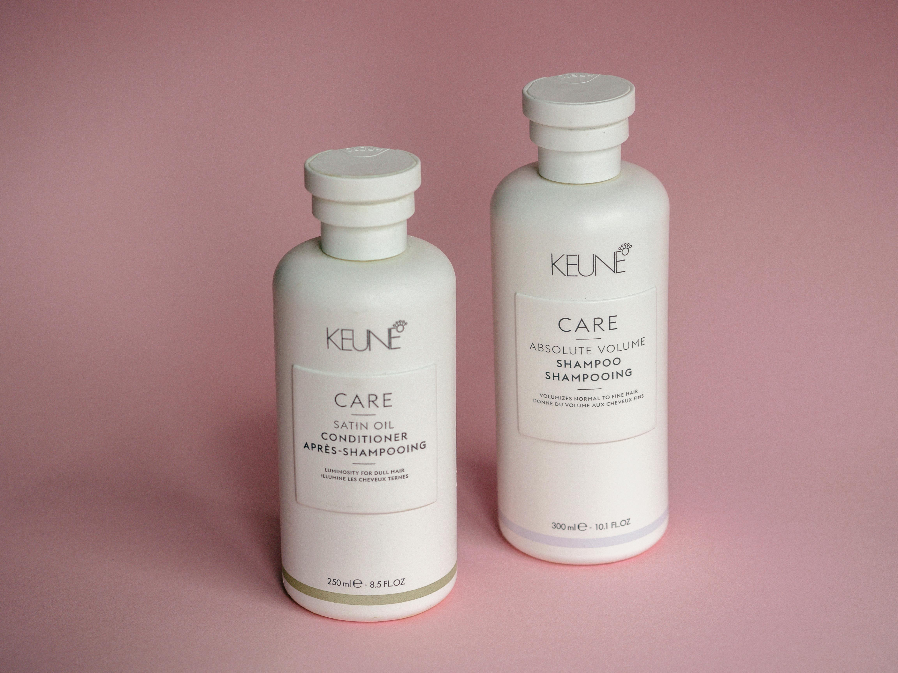
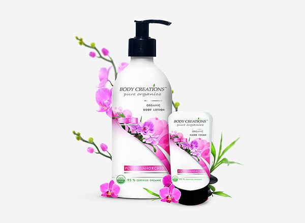
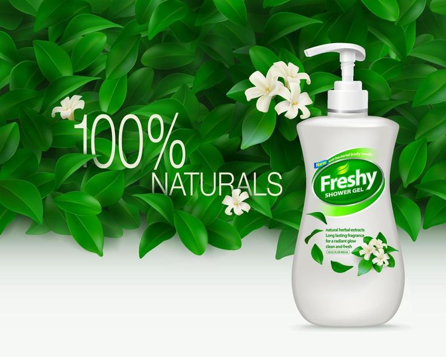

Welcome to Our Organic Haven: Your Journey to Health Starts Here.
Organic Cream Product
Organic cream is a natural skincare product made from organic ingredients. It's typically rich in nourishing compounds like vitamins, antioxidants, and essential fatty acids. These creams are formulated to hydrate, moisturize, and revitalize the skin, providing a healthy glow and promoting skin elasticity. Organic creams are free from synthetic chemicals, parabens, and harmful additives, making them suitable for sensitive skin types. They often feature botanical extracts, herbal infusions, and plant-based oils known for their healing and rejuvenating properties. Overall, organic creams offer a luxurious and effective way to pamper your skin while avoiding potentially harmful ingredients.
Top Product
Shampoo and Conditioner
Shampoo and conditioner are essential hair care products designed to clean, nourish, and maintain the health of your hair. Shampoo is formulated to remove dirt, oil, and product buildup from the scalp and hair strands, leaving them clean and refreshed. It often contains cleansing agents, moisturizers, and sometimes specific ingredients targeting issues like dandruff or hair damage. Conditioner, on the other hand, is used after shampooing to replenish moisture, smooth the hair cuticle, and reduce tangling. It helps to improve the manageability and overall appearance of the hair by providing hydration and nourishment.
ORGANIC BODY CREAM
Organic body cream is a luxurious skincare product designed to moisturize and nourish the skin using natural and organically sourced ingredients. Unlike conventional body creams that may contain synthetic chemicals and preservatives, organic body creams are formulated with ingredients grown without the use of pesticides, synthetic fertilizers, or genetically modified organisms (GMOs).These creams typically feature a blend of plant-based oils, butters, and extracts such as shea butter, coconut oil, jojoba oil, and aloe vera, which are known for their hydrating, soothing, and healing properties.
LIQUID BODY WASH
Body wash is a liquid cleansing product designed for use during showers or baths to clean the skin. It is formulated to remove dirt, oil, sweat, and impurities, leaving the skin feeling fresh and revitalized. Unlike bar soap, body wash is often enriched with moisturizing ingredients to prevent the skin from drying out.Typically, body washes contain a combination of cleansing agents (surfactants), moisturizers, and sometimes exfoliants. The surfactants help to create a rich lather that effectively cleans the skin, while moisturizers like glycerin, aloe vera, and various oils help to maintain the skin's natural moisture balance.